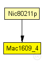
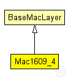

This documentation is released under the Creative Commons license
This documentation is released under the Creative Commons licenseManages timeslots for CCH and SCH listening and sending.
Author: Christopher Saloman
Author: David Eckhoff : rewrote complete model
See also: DemoBaseApplLayer
See also: Nic80211p
See also: PhyLayer80211p
The following diagram shows usage relationships between types. Unresolved types are missing from the diagram.
The following diagram shows inheritance relationships for this type. Unresolved types are missing from the diagram.
| Name | Type | Description |
|---|---|---|
| BaseMacLayer | simple module |
Base module for every mac layer module |
| Name | Type | Description |
|---|---|---|
| Nic80211p | compound module |
This NIC implements an 802.11p network interface card. |
| Name | Type | Default value | Description |
|---|---|---|---|
| notAffectedByHostState | bool | false | |
| headerLength | int | 0 bit |
length of the MAC packet header (in bits) |
| address | string | "auto" |
MAC address as hex string (12 hex digits), or "auto". "auto" values will be replaced by a generated MAC address in init stage 1. |
| useServiceChannel | bool | true |
cycle between an SCH and the CCH (or stay on CCH all the time) |
| serviceChannel | int | 1 |
the service channel this maclayer listens on when started |
| bitrate | int | 6 Mbps |
bit rate |
| syncOffset | double | 0.0003s |
maximum artificial asynchronization between cars to avoid synchronization effects |
| txPower | double |
tx power [mW] |
|
| queueSize | int | 0 |
the maximum queue size of an EDCA queue in the MAC. 0 for unlimited. Queue strategy is "drop if full" |
| dot11RTSThreshold | int | 12000bit |
unicast parameters |
| dot11ShortRetryLimit | int | 7 | |
| dot11LongRetryLimit | int | 4 | |
| ackLength | int | 112bit | |
| useAcks | bool | false | |
| frameErrorRate | double | 0 |
artificial drop rates for data frames and acknowledgements for testing purposes |
| ackErrorRate | double | 0 |
| Name | Value | Description |
|---|---|---|
| class | veins::Mac1609_4 |
| Name | Direction | Size | Description |
|---|---|---|---|
| upperLayerIn | input |
from upper layer |
|
| upperLayerOut | output |
to uppe layer |
|
| upperControlIn | input |
control from upper layer |
|
| upperControlOut | output |
control to upper layer |
|
| lowerLayerIn | input |
from lower layer |
|
| lowerLayerOut | output |
to lower layer |
|
| lowerControlIn | input |
control from lower layer |
|
| lowerControlOut | output |
control to lower layer |
| Name | Type | Unit |
|---|---|---|
| org_car2x_veins_modules_mac_sigRetriesExceeded | BaseFrame1609_4 | |
| org_car2x_veins_modules_mac_sigSentAck | bool | |
| org_car2x_veins_modules_mac_sigChannelBusy | bool | |
| org_car2x_veins_modules_mac_sigCollision | bool | |
| org_car2x_veins_modules_mac_sigSentPacket | bool |
| Name | Title | Source | Record | Unit | Interpolation Mode |
|---|---|---|---|---|---|
| sentPackets | org_car2x_veins_modules_mac_sigSentPacket | count, vector? | |||
| sentAcks | org_car2x_veins_modules_mac_sigSentAck | count, vector? | |||
| channelBusy | org_car2x_veins_modules_mac_sigChannelBusy | timeavg, vector? | |||
| collisions | org_car2x_veins_modules_mac_sigCollision | count, vector? | |||
| retriesExceeded | org_car2x_veins_modules_mac_sigRetriesExceeded | count, vector? |
// // Manages timeslots for CCH and SCH listening and sending. // // @author Christopher Saloman // @author David Eckhoff : rewrote complete model // // @see DemoBaseApplLayer // @see Nic80211p // @see PhyLayer80211p // simple Mac1609_4 extends BaseMacLayer { parameters: @class(veins::Mac1609_4); // cycle between an SCH and the CCH (or stay on CCH all the time) bool useServiceChannel = default(true); // the service channel this maclayer listens on when started int serviceChannel = default(1); // length of MAC header, header is already added at 1609_4 headerLength @unit(bit) = default(0 bit); // bit rate int bitrate @unit(bps) = default(6 Mbps); // maximum artificial asynchronization between cars to avoid synchronization effects double syncOffset @unit(s) = default(0.0003s); //tx power [mW] double txPower @unit(mW); //the maximum queue size of an EDCA queue in the MAC. 0 for unlimited. Queue strategy is "drop if full" int queueSize = default(0); // unicast parameters int dot11RTSThreshold @unit(bit) = default(12000bit); int dot11ShortRetryLimit = default(7); int dot11LongRetryLimit = default(4); int ackLength @unit(bit) = default(112bit); bool useAcks = default(false); // artificial drop rates for data frames and acknowledgements for testing purposes double frameErrorRate = default(0); double ackErrorRate = default(0); // signal informing interested application about channel busy state @signal[org_car2x_veins_modules_mac_sigChannelBusy](type=bool); @statistic[channelBusy](source=org_car2x_veins_modules_mac_sigChannelBusy; record=timeavg,vector?); // signal informing interested application about a collision @signal[org_car2x_veins_modules_mac_sigCollision](type=bool); @statistic[collisions](source=org_car2x_veins_modules_mac_sigCollision; record=count,vector?); // signal informing interested application about a sent packet @signal[org_car2x_veins_modules_mac_sigSentPacket](type=bool); @statistic[sentPackets](source=org_car2x_veins_modules_mac_sigSentPacket; record=count,vector?); // signal informing interested application about a sent ackknowledgement @signal[org_car2x_veins_modules_mac_sigSentAck](type=bool); @statistic[sentAcks](source=org_car2x_veins_modules_mac_sigSentAck; record=count,vector?); // signal informing interested application about a failed unicast transmission, passing the frame for which transmission has failed @signal[org_car2x_veins_modules_mac_sigRetriesExceeded](type=BaseFrame1609_4); @statistic[retriesExceeded](source=org_car2x_veins_modules_mac_sigRetriesExceeded; record=count,vector?); }
This documentation is released under the Creative Commons license